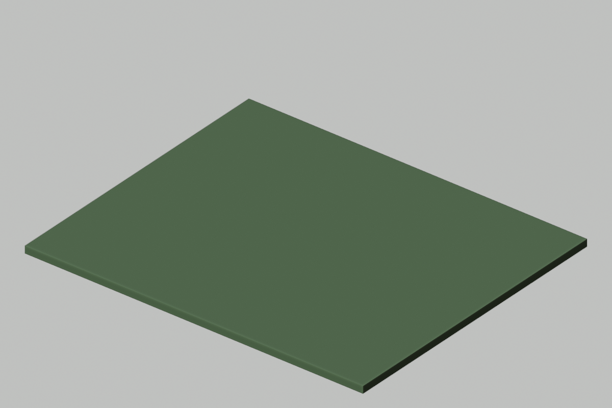

Your assignment today
- First: learn the explanation and watch today’s two demonstrations with your teacher.
- Then: try the two guided questions before looking at their solutions.
- Finish: work sections 2: Change wishes into instructions; 3: Show who does what.
- Write here: your printed sheet,notebook,or usual school document. Label it Day 1 and your design ID. This website does not save written responses.
- Turn in: the required sections,one prediction/evidence/revision statement,and the six-question check in the format your teacher assigns.
- Finished early: select a continued-practice section or ChoiceA. You do not need to finish every optional task.
Start here • today’s change • finish here
Today: Create the24×20m terrain.
A new class file. No terrain or class-world geometry yet.

These are actual Blender renders of prepared reference scenes. Your class may choose different colors/details or defer a build. Compare measurements,not just appearance. On Days2,9,and10,the visible geometry may stay the same while planning,testing,or archiving advances.
TODAY’S FINISHED PRODUCT
A class world plan and the first terrain slab
What you actually do
1. Read the short reading. 2. Complete the must-do sections listed below in your own paper journal or school document;the remaining sections are continued practice. 3. Compare with a partner when told. 4. Keep working while the teacher operates Blender. 5. Record what passed or needs fixing. 6. Submit your work and check.
You do not open Blender or an AI account. The teacher submits one class request. If your design is not selected,you still submit your own thinking.
Learn this before doing today’s work
How to use this section: read the six explanations,follow the worked examples,then try the two guided questions. Your teacher will discuss them before assigning independent work. Return to the numbered explanation if you need help with a check question.
1. What Blender does
Blender is the software that holds and changes our editable 3D scene. A scene contains objects and their properties, such as size and location. A screenshot is only a picture of a view; it does not replace the editable scene. The AI can propose a tower, but Blender must actually create and store it.
2. What the human designer does
A requirement says what our design must do. An acceptance test says how we will check that requirement. Students choose requirements, predict results, compare evidence, and propose revisions. The teacher combines selected ideas and reviews computer actions. Watching the screen alone does not show that a student understands the design.
3. A picture is evidence for some claims
A screenshot may show that a visible roof appears blue or that a tower is left of a home. It cannot by itself establish an exact hidden dimension. To check “height is 6 units,” inspect a dimension value or a measurement. To claim a route works for a particular user, define that user’s needs and test the route against them.
4. What AI, MCP, and hardware do
AI suggests an answer or action. MCP is a communication protocol through which an application can call tools made available by a server. In our setup those tools can change Blender, but only if the installed connection supports the requested action. MCP does not supply extra memory or guarantee a correct model. The processor executes instructions, memory holds working data, and storage keeps saved files.
5. Turn a wish into a checkable rule
“Make a wonderful path” is a wish because different people may judge wonderful differently. “The path is at least 2 units wide” names a quantity and a minimum. A checkable rule needs an observable condition, a number, or an explicit relationship. A requirement is a target; it becomes a passed test only after suitable evidence confirms it.
6. Learning continues without a live result
A paper trace follows an algorithm step by step and records its predicted values. It can reveal a mistake before Blender runs. A paper test is useful evidence about your reasoning, but it is not proof that Blender executed correctly. Label work as prediction, actual observation, or simulation so a failed network never forces you to invent a result.
Watch how it is done
Choose Play for a captioned demonstration,or use Next step to move at your own pace. Each example takes about20 seconds to reach its last step;pause as long as you need. Use the class task’s own numbers when you begin your work.
Turn a wish into a checkable requirement
Animated teaching diagram · silent captions · 1 world unit = 1 meter. These are worked examples, not a recording of Blender.
Follow a request from people to Blender and back
Animated teaching diagram · silent captions · 1 world unit = 1 meter. These are worked examples, not a recording of Blender.
Read the original written steps
From wish to requirement
Wish: “Make a nice entrance.”
Step 1: identify the need—people must pass through it.
Step 2: choose a measurable target—opening at least 2 units wide.
Step 3: state the test—measure the clear space between the posts.
Step 4: record the result—if measured gap is 1.8, the requirement fails; if gap is unknown, the test is not yet checked.
Who does the work?
A student proposes a 6-high tower. The teacher reviews the request. The AI application uses an exposed MCP tool. Blender changes the tower object. The computer executes that work. Students inspect the reported dimensions and compare them with 6. The AI saying “done” is not the final test.
Try together before working independently
Optional guided-practice replacement: Day 1:find the mistake and check a repair. Your teacher selects one activity rather than adding all of them.
Write or say your answer first. Then open the explanation and compare your method,not only your final value.
Guided practice 1
Rewrite “put some trees there” as a checkable instruction. Name evidence you would need.
Compare your answer and reasoning
Example: “Place 4 trees along y=-6, with centers 2 units apart.” Count the trees and inspect their positions. Other explicit counts/locations are acceptable.
Guided practice 2
A picture shows a green bridge. Can you conclude it is exactly 3 units wide? Why?
Compare your answer and reasoning
No. Visible color is evidence about appearance; exact width needs dimensions or a measurement. The correct response requests that evidence rather than guessing.
Help for the worksheet and extra choices
Worksheet help: for every need, write feature + check. System-map arrows represent instructions, actions, or feedback. Device comparison: compare who can access the tool, what evidence each student produces, and what slows the workflow. In a feature-scoring table, 1=weak, 2=partly meets, 3=strongly meets the named criterion; explain one score instead of treating the total as proof.
Connect the idea to our class world
Welcome to Lantern Reach, a fantasy settlement built by one class over ten lessons. We will keep its terrain, tower, bridge, homes, grove, gate, and signs in one changing project. Your ideas matter even when your hands are not on the teacher computer. Each designer keeps a journal that shows a proposal, a prediction, evidence, and a revision.
Blender stores and changes the 3D scene. An AI model can suggest instructions or code. An MCP connection lets an AI application call tools exposed by a server; which tools exist depends on the installed setup. MCP itself is not a 3D artist and does not guarantee correct work. The teacher reviews and runs selected requests. The processor executes instructions, memory holds working data, storage keeps saved files, and the display shows an image. A Chromebook can read a small page or record a plan without running Blender.
A confident AI reply is a claim, not proof that an object exists or has the right dimensions. We compare the actual scene or object report with our acceptance tests. A still image can show appearance but cannot prove hidden dimensions. A paper model can test an algorithm before any software runs. Our first job is to define what success means, rather than ask for something that merely looks impressive.
Today’s assignment size
Must do: numbered work sections 2, 3,the evidence/revision sentence,and the six-question check. Other numbered sections are continued practice if time allows,unless your teacher assigns one as your grade-specific task. Finish required thinking before starting an optional card. Grade7 on Day8 completes the unlabeled-pattern task in section2.
All students receive the teaching above;optional work is not a prerequisite for answering the check. If the class needs longer instruction,complete fewer practice cases or use the next class’s retrieval time for the remaining evidence. Do not skip the explanation to fit every extension.
Your four work sections
Design ID:________________ Grade:____ Date:__________
1. List the people’s needs
Write three things a traveler needs in our village. Choose from crossing water, finding shelter, finding directions, entering safely, or your own idea. For each, name a feature that meets the need. Example: need=cross water; feature=bridge. Do not copy the example as all three answers.
Finished when you have: Three need→feature pairs.
2. Change wishes into instructions
Rewrite these three wishes so another person can check them: “a big ground”; “an easy-to-use path”; “some homes.” Include a number in each. Then add one fantasy feature of your own and write TWO checks for it.
Finished when you have: Three measurable rewrites and one feature with two checks.
3. Show who does what
Make five boxes labeled STUDENTS, AI, MCP, BLENDER, HARDWARE. Beside each, write its job. Draw arrows showing request→tool action→scene→human check. Add “teacher reviews” at the point before a scene-changing tool action.
Finished when you have: Five-job diagram with a review/check route.
4. Write your selected proposal
Tell your partner your optional feature. Compare it with the 24×20 ground and the idea that paths need 2 units of width. Write one reason your feature is feasible and one change you made after listening.
Finished when you have: One feasible proposal and a marked revision.
When the teacher says “independent work”
Which statements are proved?
While I submit the terrain request, classify each statement as REQUIREMENT, VISIBLE EVIDENCE, or STILL NEEDS MEASUREMENT: A “We asked for 24×20”; B “I can see green ground”; C “It is exactly 24 units long”; D “Every possible traveler can use our world.” For C and D, write what additional evidence you need. If you cannot see a live result, use “a supplied picture would show green ground” for B and label the whole exercise SIMULATED.
After the class checks the result
Complete: “I predicted____. Our evidence source was____(actual scene/report/paper trace/simulated). It showed____. I changed or confirmed____because____. We still do not know____.”
Grade target
- Grade 6: Use the five job labels; write the three number-based rules with sentence starters.
- Grade 7: Add a two-sentence comparison: why Chromebooks hold the design work while the teacher computer runs Blender.
- Grade 8: Add a failure route: show which work continues if the AI/network stops, and justify the hardware/software roles.
What to turn in
Submit work sections 2: Change wishes into instructions; 3: Show who does what. Add your prediction/evidence/revision statement and the six-question check. Other numbered sections and choice cards are continued practice unless your teacher substitutes one for a grade-specific task.
Finished early? Choose one.
These are extra choices after your required work;your teacher can assign one in place of waiting work. Read the finished-product requirement before you start.
Device council
Compare three workflows: everyone models locally; teacher models while everyone designs; everyone watches silently. Make a 3-row table with access, learning evidence, and likely bottleneck. Recommend one workflow in six sentences, citing two features of our classroom.
Turn in: A nine-cell comparison and supported recommendation.
World charter hearing
Draft proposals for a floating garden, a market, and a watchtower. For each specify purpose, primitive shapes, maximum object count, and a measurable success test. Rank them against accessibility, feasibility, and usefulness using scores 1–3. Explain one disagreement between your ranking and a partner’s.
Turn in: Three proposals, nine scores, and a resolution paragraph.
Failure route
Redraw your system map with the network connection unavailable. Cross out only steps that fail. Add a paper-only route that still produces a tested design. Explain two learning goals that remain possible.
Turn in: Your supported explanation,trace,or revised plan.
If technology fails
Use the included base map printed or copied onto the board. Students perform the system map and charter on paper. Replace live evidence with this written report: terrain 24 by 20 units; no tower yet; no bridge yet. Students must label conclusions as report-based, not observed in Blender.
Shared-world reference strip
Ground24×20,top z=0. x=east/west,y=north/south,z=up. Tower body4×4×8,center(-7,4,4);roof radius3,depth2,center(-7,4,9). River x=-2 to2. Bridge8 planks,centers x=-3.5+i for i0–7,y=-4,z=.2;each1×3×.4. Homes H1(5,3,h2),H2(9,3,h4),H3(7,7,h6):body3×3×h,center z=h/2;roof depth2,center z=h+1. Grove:6 candidates,x=-9+2*i,y=-7,skipx=-5. Gate:posts x4 and8,width1,height4;lintel center(6,0,4.5),size5×1×1;gap3,clearance4. Required route width≥2. These are requirements until measured.